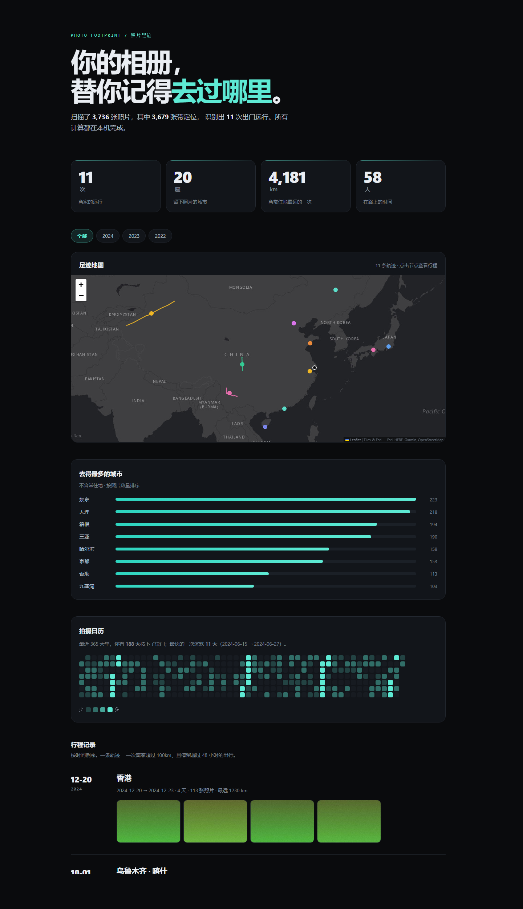

整个过程都在你的电脑上完成。没有服务器，也就没有上传这回事。
整个目录拖进页面，或者点按钮选。支持 JPEG、PNG、TIFF、WebP；HEIC 会退化成按文件名取时间。
D:/Pictures
浏览器读 EXIF、去重、剔除 GPS 漂移、把跨时区的时间对齐，再切出一次次行程。没有一张照片离开这台机器。
EXIF → 清洗 → 聚类 → 统计
足迹地图、拍摄日历、每次远行的路线。命令行版本还能直接导出单个 HTML 文件，发给别人就能看。
out/footprint.html · 单文件
用一份编造的三年数据跑出来的，不是设计稿。点开就是最终产物。
市面上的相册分析工具都要你先上传。为了一份「看着玩」的报告，这个代价太高了。
所以这里没有服务器：解析、清洗、渲染全在本机，输出是静态 HTML。你可以拔掉网线再打开它。
不会。没有后端服务，脚本只读本地文件，产物是一个 HTML。唯一会联网的地方是报告里的地图瓦片——断网时会自动降级成轨迹简图。
照样计入总数和日历，只是不上地图。报告底部会如实写出「带定位 X 张 / 共 Y 张」，不假装数据完整。
JPEG、PNG、TIFF、WebP 都能读。HEIC 需要额外的解码器，目前会退化成按文件名取时间。
不用。网页版就在浏览器里跑，拖进文件夹即可。仓库里也留了命令行版本（python -m wrapped footprint），适合一次处理多个相册或者接自动化。
因为整个产品没有后端。照片用浏览器自带的 API 读进内存，算完就渲染成页面，关掉标签页就没了。这不是隐私策略，是架构决定的。